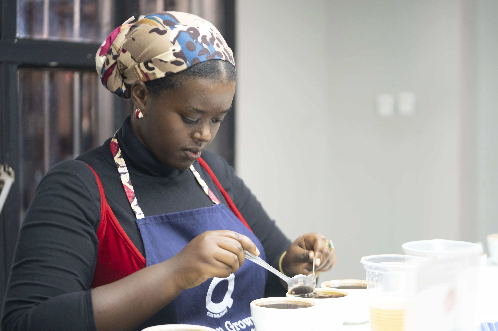

Elevate Initiative is a sustainability-focused initiative on uplifting women coffee farmers and nurturing the next generation in the Rwandan coffee industry.
Bridging Farms,
Voices & Markets

Through a holistic approach, Elevate Through Coffee aims to enhance sustainable livelihoods by providing women farmers with essential professional training, fair market access, and economic independence.
0
+Women and youth farmers trained
350+
0
+Tones sold in fair-market that we facilitated
40+
0
%+Increase in income among beneficiary farmers
35%+
0
%Retention of program participants after one year
93%
from beans to brilliance
empowering women beyond the farm.
Impact that inspires transformation & growth
We partner with women coffee farmers across Rwanda to build skills in sustainable agriculture, financial literacy, and entrepreneurship. By improving coffee quality, connecting farmers to fair markets, cultivating their off-season business ideas and investing in youth, Elevate Initiative helps communities thrive beyond coffee harvests.
Ways we make an impact
Education / Economic Independence / Quality Evaluation
Education

We offer workshops and ongoing training in best agricultural practices, coffee quality assurance, climate resilience, and leadership. Our programs help farmers sharpen their techniques, reduce wastage, and improve yield, while also nurturing confi dence and community leadership among women.
Economic Independence

By facilitating direct access to fair trade markets, contractual advisory during their trade negotiations, and helping women brand and sell higher value products, we enable them to earn more and reinvest in their families and future.
Quality Evaluation
We work closely with farmers on improving bean quality: from soil health and harvesting techniques through post-harvest processing. Our support includes access to lab testing, quality grading, and buyer feedback so that each harvest meets international standards.
Ways you can make a difference
We believe that the collective power of compassion and generosity can create meaningful change in the world. Your support is crucial in enabling us to continue our mission of making a positive impact on communities in need.
Monetary Donations
Your financial support helps us cover training costs, purchase quality tools, build processing infrastructure, and ensure fair compensation for farmers. Every contribution makes a tangible difference.
Become a donor today
Consider giving monthly to ensure steady growth and ongoing programs. Monthly donors help us plan long-term, invest in sustainability, and reach more communities.
Corporate Cooperation
We are eager to partner with businesses that share our commitment to ethical sourcing and women's empowerment. Opportunities include sponsorship, supply partnerships, or joint impact programs.
Volunteer Your Time
Whether in Rwanda or abroad, your skills are welcome. Help with training workshops, communications, fundraising, or field support. Bring your passion and we'll find a place for you!
Recent Projects/Campaigns
“Harvest for Hope” Coffee Quality Initiative
In partnership with local agronomists, we ran a 6-month quality improvement program in Kayonza district, helping 120 women reduce bean defects by 40% and increase income by 30%.
Sanitary Pads Distribution: Addressing Menstrual Poverty
In the coffee industry, where about 85% of the workforce in production is women, menstrual poverty is a serious barrier: without reliable access to sanitary products, many women face health risks, lost workdays, and stigma. Elevate Initiative launched a Sanitary Pads Distribution campaign to tackle this head-on.

Barista Exchange Program: Professional Development & Mentorship
To build capacity along the value chain, Elevate Initiative implemented a Barista Exchange Program. This gives baristas from our partner communities opportunities to grow professionally, build networks, and gain mentorship.
From Origin Podcast: Amplifying Voices, Educating, Connecting & Marketing
Elevate Initiative's From Origin podcast is a platform dedicated to giving voice to the unsung heroes behind your cup of coffee: the women farmers, youth workers, baristas, and community leaders at the origin. It is one of our key campaigns for storytelling, education, advocacy, and bridge-building across the coffee value chain.
Fair Market Access Project
We connected farmers from Kayonza, Ngoma and Kamonyi with specialty roasters abroad, helping them negotiate fair contracts, package their beans to export standards, and earn premium prices.
Join Us to Brew Lasting Impact
Your support can help change lives and transform communities. Whether through donations, volunteering, or spreading awareness, every action counts.
Answers to our most frequently asked questions
Answers to common questions about our mission and work and quick guide to our programs and processes.
How does your donation help?
expand_moreYour gift fuels every step of our work: from delivering training, buying tools, distributing hygiene supplies, paying quality testers, to ensuring farmers are paid fairly and their work isn't interrupted. Donations also support infrastructure; like drying stations, processing equipment, or transportation that make a lasting impact.
How can I stay updated on the impact of my donation?
expand_moreWe send quarterly newsletters with stories, reports, photos, and financial updates. We also share progress via social media and annual reports. Donors can opt in to special impact-updates or even join fi eld visits (virtual or in person) when possible.
Can I volunteer with my friends / group?
expand_moreAbsolutely! Group volunteering is welcome. Whether you're organizing a fundraiser, helping with community events, or doing remote support work (graphics, translations, media), teams make a big difference. Just get in touch and we'll coordinate logistics and roles.
What portion of funds goes directly to farmers vs administrative costs?
expand_moreWe are committed to transparency. Typically, 80% of every donation goes directly to farmer programs (training, quality improvement, market access), while the rest supports operational costs (staff, transport, communications, infrastructure). Annual fi nancials are available to donors.
Where in Rwanda do you work?
expand_moreWe partner with communities in regions such as (e.g. Eastern Province, Kayonza; Southern Province, Nyamagabe; Northern Province, Musanze). We aim to expand to more districts each year and beyond borders.